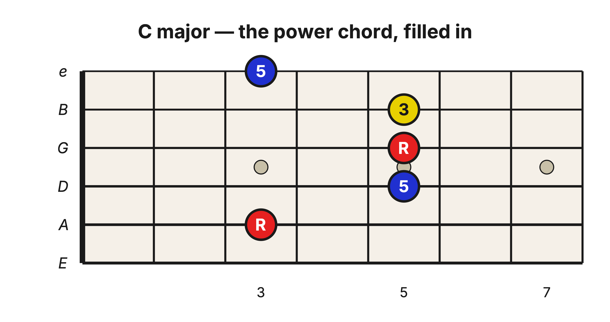
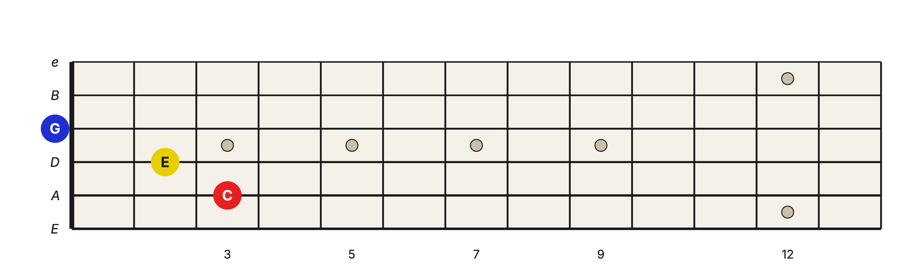
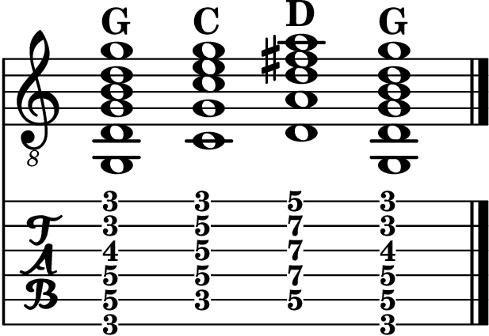

Level 2 · Chapter 17
Music Theory and The Fretboard: Barre Chords Are Triad Voicings
Here is a puzzle. A triad is a three-note chord: the root, the 3rd, and the 5th, nothing else. That is its definition. Yet the E-shape barre you have been playing strums all six strings, and the A shape strums five. Six notes out of a three-note chord. What exactly have you been playing?
Count the notes
Take the G Major barre at the 3rd fret and name every note, low string to high: G, D, G, B, D, G.

Six notes played, but only three different names: G, B, and D. The root, 3rd, and 5th of the G Major triad you built by stacking 3rds. Every other note in the grip is just a root or a 5th repeated in another octave.
The A shape tells the same story. C Major at the 3rd fret is C, G, C, E, G from the bottom up: the degrees 1, 5, 1, 3, 5. Five strings, three names.

You have seen this trick before
Think back to Level 1. The C5 power chord was two notes, C and G, but you usually played it on three strings, with another C added an octave higher. Adding that extra C did not create a new chord, because no new note name joined the set. We called that a voicing: a particular way of arranging a chord's notes, choosing which ones to double and which octaves to place them in.
The barre chords are the same idea at full size. The E-shape barre is not a bigger chord than the G Major triad. It is the G Major triad, voiced across six strings. Doubling the root twice and the 5th once changed the thickness of the sound, not the chord.
And the compact three-string triads you learned earlier are voicings too, the smallest possible ones: each note of the set played exactly once.

The chord symbol never tells you which voicing to use. C means the set of notes C, E, and G. Play them on three strings at the nut or on five strings behind a barre; either way, the symbol is satisfied. All of them are C Major.
One chord, two homes
Because you now carry two maps, the same chord can be played in two places without leaving the first twelve frets:
| Chord | E shape (root on the low E string) | A shape (root on the A string) |
| G | 3rd fret | 10th fret |
| C | 8th fret | 3rd fret |
| D | 10th fret | 5th fret |
Same chord, same three-note set, two voicings in two neighborhoods. Which home should you choose? That depends on where your hand already is.
Harmonic zones
Songs rarely ask for one chord; they ask for a progression. Take G, C, and D, the primary triads of the key of G and the three chords that have started a thousand songs. There are now two fundamentally different ways to play them.
Option 1: one shape, three places. This is what you did in the E-shape chapter: G at the 3rd fret, C at the 8th, D at the 10th, the same grip sliding up and down the neck.

Option 2: two shapes, one place. Keep G where it is, and pull the other two chords into the same part of the neck: C as an A shape at the 3rd fret, D as an A shape at the 5th.

I call a stretch of neck like this a harmonic zone: a small area, five to seven frets wide, that your hand can cover without shifting around. Inside one zone, changing chords means changing shapes, not leaping up the neck.
Neither option is wrong. The long slides of Option 1 are a sound and a look of their own, and plenty of great songs are played exactly that way. The point is that you now have a choice you did not have two chapters ago, because the same chord lives in more than one home.
Hear it
Play the progression both ways, a few strums per chord. Option 1 jumps: each new chord arrives in a new register, noticeably higher or lower than the last. Option 2 stays put: the chords share a register, so the changes sound smoother, with most of the sound barely moving. Same three chord symbols, two very different rides. Listen until you can hear the difference before you can name it.
Try it yourself
A song asks for A, D, and E, the primary triads of the key of A. Using both of your shapes, find one harmonic zone that holds all three chords. Then check below.
Answer key
Play A as an E-shape barre at the 5th fret, D as an A-shape barre at the 5th fret, and E as an A-shape barre at the 7th. The whole progression sits between the 5th and 9th frets: one zone, no long slides.
You have been playing triads all along. The barre chords never added anything new to the harmony; they just spent more strings on the same three notes. These barre chords are triad voicings. A voicing is how you choose to play a chord's notes.